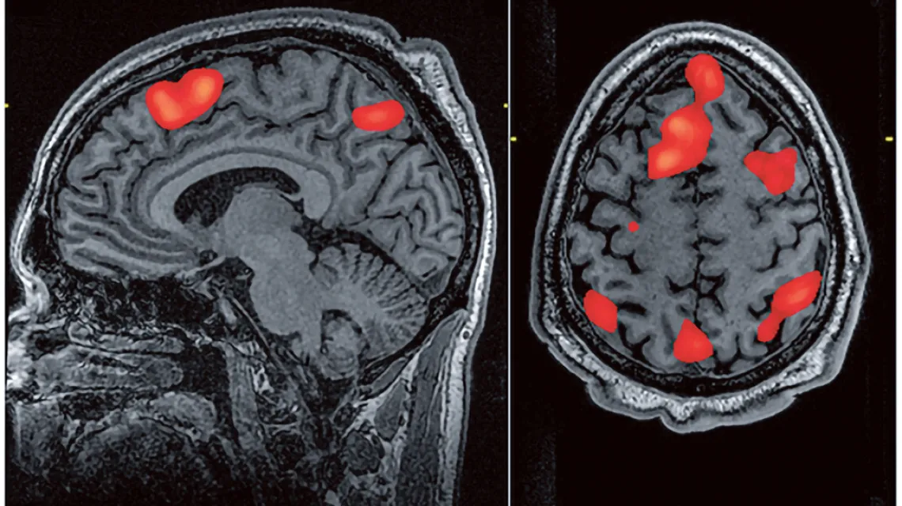
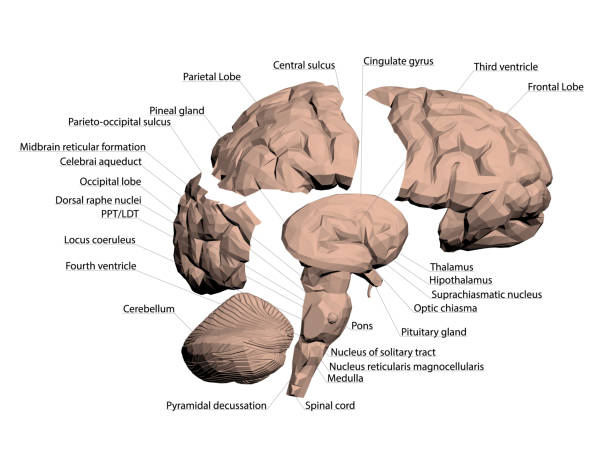

Ciekawostki o Neurochirurgii

Najstarsza znana operacja mózgu – trepanacja – była wykonywana już ponad 7 000 lat temu.

Mózg nie odczuwa bólu, ponieważ nie ma receptorów bólowych.
Pierwsza udana operacja usunięcia guza mózgu miała miejsce w 1884 roku.

Nowoczesna neuronawigacja pozwala chirurgom na precyzyjne operacje z minimalnym ryzykiem.
Neurochirurgia jest jedną z najbardziej wymagających specjalizacji medycznych, wymagającą wieloletniego szkolenia.